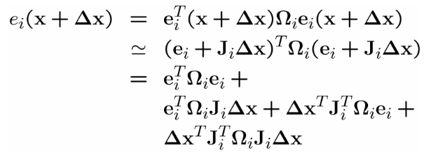
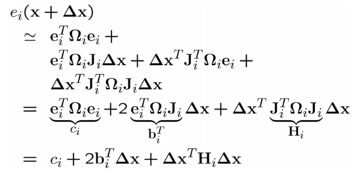
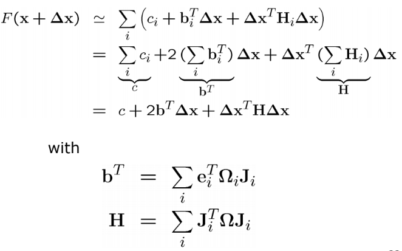
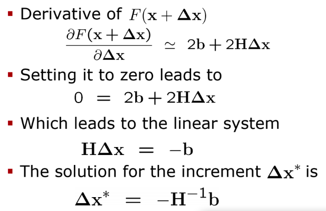
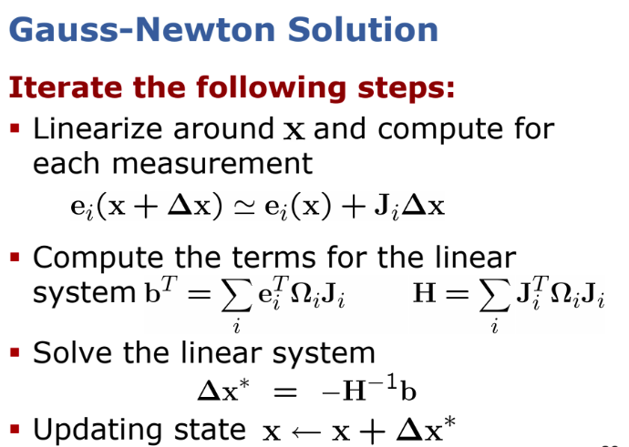

最小二乘算法简介。
简介
移动机器人 slam 问题的解决方案，一般采用，卡尔曼滤波，粒子滤波或者图优化。基于图优化的slam是目前的主流方案。最小二乘方法是基于图优化的slam采用的主要工具。
总体来说，最小二乘是一个求解超定方程的方法。超定方程中方程的个数多于未知数的个数，此时通过最小化方程的误差平方和，来求解未知数。最小二乘方法是求解大规模问题的标准方法，经常用来在给定观测的情况下估计模型的参数。
问题定义
系统由一系列的观测方程${f_i(\mathbf x) }_{i=1:n}$ 所描述,它表示机器人状态到测量值的映射关系。并做如下定义:
- $\mathbf x$ 表示系统的状态向量,我们需要估计的量，在移动机器人中，通常表示机器人位置和旋转角.
- $\mathbf z_i$ 表示跟系统状态$\mathbf x$ 有关的实际测量值(real measurements)。
- $\hat{\mathbf z}_i=f_i(\mathbf x)$表示基于系统当前状态得到的预测的测量值(predicted measurements).
其中，跟状态$\mathbf x$ 相关的测量$\mathbf z_{i:n}$是已知的。我们的目标就是估计可以最好的解释 我们测量值的 系统状态。换句话说就是，系统状态如何配置，最有可能获取到目前的测量值。
系统状态，预测的测量值，实际的测量值之间的关系如下图所示。
系统状态是未知的，是需要估计的量，但是需要注意，系统状态是有初始值的。根据系统状态，可以利用观测方程得到预测的测量值。实际的测量值实时通过传感器数据获取。我们目标就是，对系统状态进行最优估计，得到可以最好的解释当前测量值的状态量。也就是说，系统状态量处于什么值，才能最大概率获取到当前的测量数据。
例如，在计算机视觉中，$\mathbf x$表示世界坐标系下特征点的3D坐标，是我们需要估计的量，同时我们知道它的初始值是多少，$\mathbf z_i$为其在图像坐标系下的像素坐标，是真实的测量值。相机的pose已知，我们可以根据针孔相机模型$f_i(\mathbf x)$得到特征点在相机坐标系下预测的测量值$\hat{\mathbf{z}}_i$. 然后对特征点的3D位置进行估计，调整特征点的3D坐标，使得实际的测量值和预测的测量值的误差减小。
误差方程
误差方程就是实际的与预测的测量值的差异
$$\mathbf e_i(\mathbf x) = \mathbf z_i - f_i(\mathbf x)$$
我们假设误差的平均值为零，并且呈正态分布. Gauss 误差，信息矩阵为$\mathbf \Omega_i$，它是对称矩阵。
测量的平方误差仅取决于系统状态，并且是标量.
$$e_i(\mathbf x) = \mathbf e_i^{\top}(\mathbf x)\mathbf \Omega_i \mathbf e_i(\mathbf x)$$
我们的目标就是，在给定的所有测量值情况下，找到最优的系统状态$\mathbf x^*$，使得所有误差平方和最小。
求解
我们考虑通过迭代的方式对系统状态进行求解。首先做如下假设
- 有”良好”的系统状态初始值
- 误差方程平滑
通过迭代方式求解主要包含如下几个步骤
- 在当前解/初始值附近，对误差项进行线性化
- 计算误差平方函数的一阶导数
- 将上一步得到的结果=0，求解线性方程
- 得到新状态
- 迭代
误差项在当前解附近线性化
利用Taylor展开
$$\mathbf e_i(\mathbf x + \mathbf \Delta \mathbf x )= \mathbf e_i(\mathbf x) + \mathbf J_i(\mathbf x) \Delta \mathbf x$$
如果$\mathbf e_i(\mathbf x)$ 为$m$维的向量，$\mathbf x$ 为$n$维的向量，那么$\mathbf J_i(\mathbf x)$是一个$m \times n$的矩阵。
平方误差对$\Delta \mathbf x$的一阶导数
首先将线性化后的误差函数，代入，误差平方公式中，我们想得系统状态改变$\Delta \mathbf x$,误差平方和将如何变化，需要注意的是测量的误差平方和是一个标量，可以得到:

经过合并同类项，可以得到:

需要注意的是式子右边的每一项都是一个标量。
值得注意的是，我们拥有的大量的测量数据，记$F(\mathbf x+ \Delta \mathbf x)$ 为所有测量误差平方项的和,注意，它也是一个标量，那么就有

之后我们计算$F(\mathbf x+\Delta \mathbf x)$ 相对于$\Delta \mathbf x$的导数(给定$\mathbf x$),之后令其等于0，求解关于$\Delta \mathbf x$线性方程。之后将$\Delta \mathbf x$更新到系统状态，进行迭代。
该过程如下图所示:
.
总结
给定多组测量，基于迭代法求解系统最优状态的方法如下，
首先对于每一个测量值在当前状态估计附近进行线性化，该步骤需要求解误差函数相对于系统状态的雅克比矩阵。之后构建$\mathbf H$和$\mathbf b$矩阵，求解关于增量的线性方程，将最优的增量更新到系统状态上，不断进行迭代。如下图所示

基于迭代法求解最小二乘的核心思想就是，基于当前的系统状态(initial gauss)，寻找系统增量，迭代更新系统状态，使得所有测量误差平方和最小。